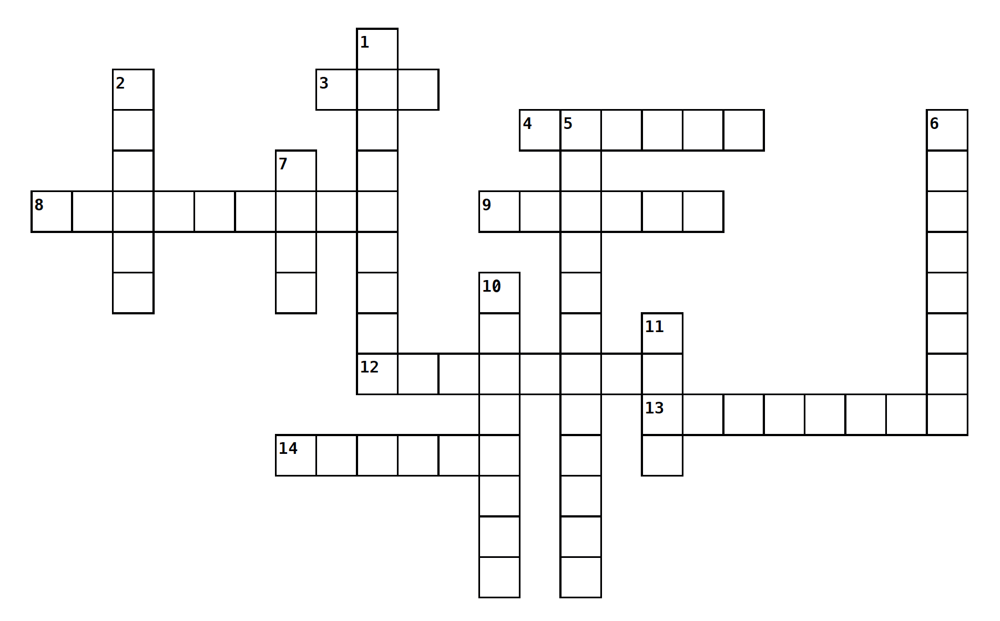

I am a multimedia creative and digital humanities scholar with a passion for storytelling. I enjoy uncovering narratives that have historically been overlooked and bringing them to more audiences through new media. But my passion for media is more than just a hobby or a handful of skills, it has developed into a whole ethos, a hypothesis, a journey...
I received my Bachelor's degree at the University of Kansas in 2022 and followed that up with a Master's degree from Trinity College Dublin. Education has also taken me across Germany(both physically and figuratively speaking...)
My work experience spans agencies and non-profits giving me the best of both worlds in terms of skill acquisition and professional development. I've also gotten to wear multiple hats across different roles, from the PR Patrol cap to the Strategist's Stetson...
What's in a portfolio? A website? A multi-media anthology? Social media graphics? A 3D interactive installation? A short film? Essays? I think a portfolio really only needs one thing: vision...
TODAY'S CROSSWORD: NAOMI'S TOP CONVERSATION STARTERS
